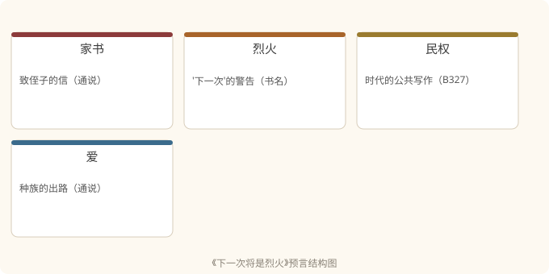

下一次将是烈火
一、基本信息
| 作者 | 詹姆斯·鲍德温 |
|---|---|
| 成书/出版 | 1963年（Britannica B327：The Fire Next Time, 1963） James Baldwin — Encyclopaedia Britannica（百科全书） |
| 国别/地区 | 美国 |
| 时代 | 现当代 · 20世纪60年代初 |
| 体裁 | 散文集 |
| 语言 | 英语 |

《下一次将是烈火》预言结构图（主题·结构图）
二、创作背景
Britannica（B327）：The Fire Next Time——散文列表（1963）。
Britannica（B327）：鲍德温——民权运动语境（作者页交叉——'民权活动家'定位待核）。
题材（通说待核）：致侄子的信+《从我的藏在地下室里的手册》——'黑人 Muslim'与爱之可能。
三、内容脉络
（通说待核）'致侄子'：美国黑人处境的家书。
（通说待核）地下室手册：宗教与民族的清算。
四、主要人物表
| 人物 | 身份 | 说明 |
|---|---|---|
| '我' | 写信人 | （B327 语境） |
五、主题与艺术特点
- 种族与爱（通说待核）。
- '下一次——烈火'的预言（书名语境——通说待核）。
- 民权时代的公共写作（B327 交叉）。
六、影响与评论
- Britannica：The Fire Next Time (1963)（B327）。
James Baldwin — Encyclopaedia Britannica（百科全书） - Britannica：《向苍天呼吁》为'first and finest novel'（B327 交叉）。
James Baldwin — Encyclopaedia Britannica（百科全书）
七、阅读建议
难点
- 民权运动史。
- '黑人穆斯林'语境（通说待核）。
- 《下一次将是烈火》中译本（人民文学等——通说待核）。
- 英文原版。
鲍德温散文首选；与《向苍天呼吁》对读。
八、待核实
- 两篇散文标题核对（通说）。
- 1963年出版（Dial Press说）待核。
- '民权'细节待核。